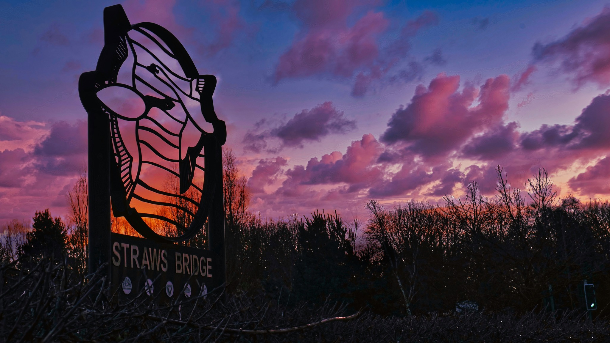
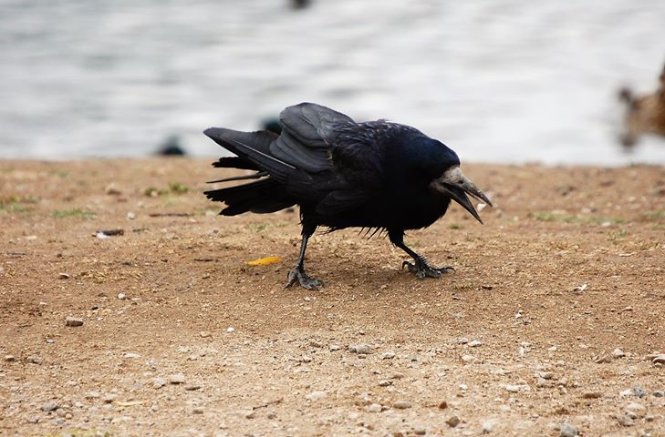
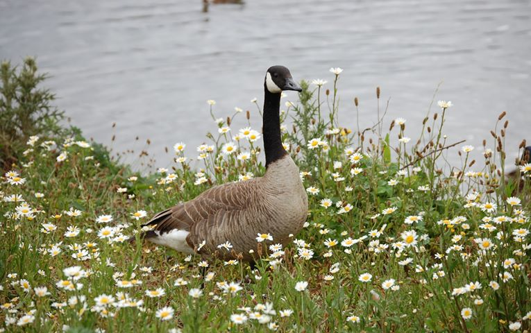
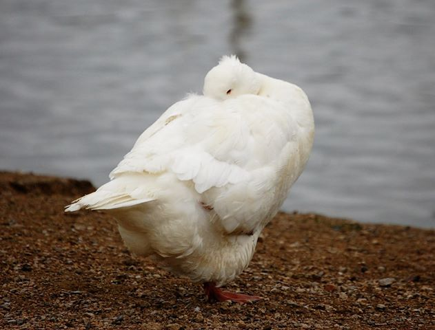
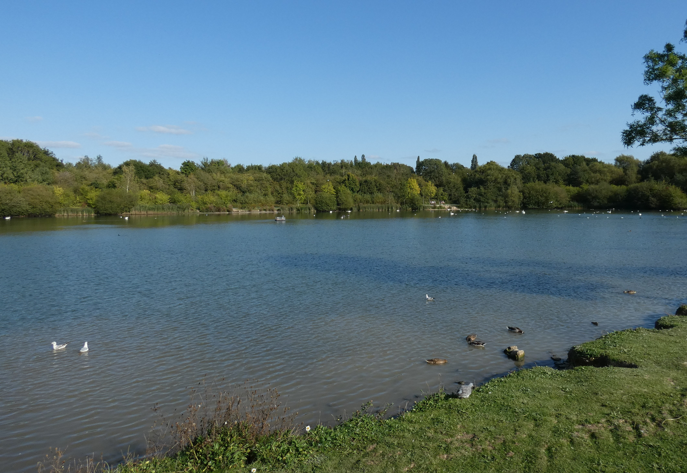

Visitor Pictures
A selection of pictures taken by visitors to the reserve

Anthony Gidlow, January 2023

Roy Foulkes

Roy Foulkes

Roy Foulkes

Swan on the main pond - Ruth Cornock

Swan family on back ponds - Ruth Cornock

Heron in flight - Ruth Cornock

Main pond - Ruth Cornock

Whooper Swan - Ruth Cornock (October 2019)